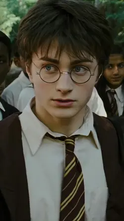
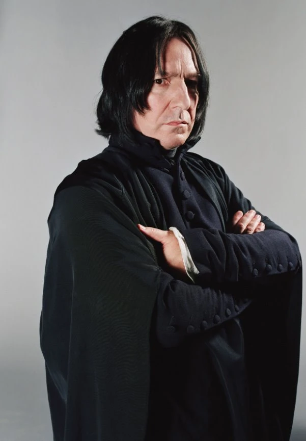

Harry Potter is a young wizard born in Godricks Hollow, where his parents were murdered by He Who Must Not Be Named.
Raised by his muggle aunt and uncle, he lived a life largely unaware of Wizard kind until he attended Hogwarts.
Once in school, Harry did a miriad of things:
Not all praise Mr Potter so willy nilly. One Severus snape has broken through the illusion. Here he is telling it how it is:
Severus Snape, professor and scholar:
It seems there's a pattern here, Harry's proxies do most of the work, and Harry Potter
takes most of the credit. Sure, he killed 'You Know Who' by finding the 7 horcruxes,
one of which was Harry himself, ultimately killing the dark wizard with an expelliarmus
spell. But ultimately he is just a wizard. With no special talent aside from killing the most
powerful wizard of our time and being the only person to survive an Avadakedabra curse.
All in all it seems that there is not much behind that lightning
bolt on his forehead. Just a famous boy made famous by others doing. Perhaps we should heed
Severus when he says:
Right you are Severus, right you are.